학교 다니면서도 영상을 만든 방법
제로초는 올해부터 전업 유튜버가 됐어요. 대학을 다니는 동안에도 거의 이틀에 한 번 직접 출연한 쇼츠를 올렸고, 협업 제안까지 몰리면서 9월과 10월이 가장 바빴다고 해요. 일정이 버거워진 게 자동화를 연구한 이유예요. 아직 완성 단계는 아니라서, 이 영상은 지금 쓰는 방식을 보여 주는 브이로그에 가까워요.
버틸 수 있었던 건 24시간 돌아가는 서버와 AI 덕분이었어요. 이동 중에도 에이전트에게 일을 맡기고, 결과물이 오면 협업툴에서 열어 본 뒤 고칠 곳을 코멘트로 남겨요. 아래 화면이 그 협업툴 Buzz예요. 왼쪽에 'ego lite 협업', 'higgsfield 협업' 같은 작업별 채널이 있고, 가운데에는 에이전트 '가재 (Hermes)'가 올린 index.html, script.txt, 미리보기 이미지와 zip 파일이 보여요.
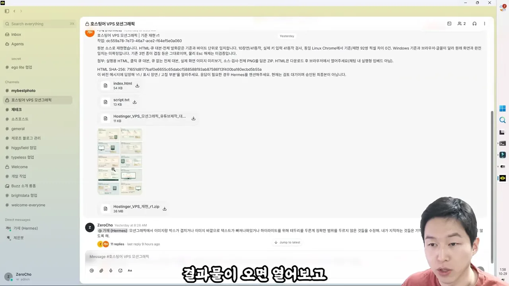
빨리 만드는 것만큼 품질도 중요해요. 그래서 무엇을 AI에게 맡기고 어디를 사람이 확인할지가 영상 전체를 관통하는 질문이에요.
AI로 서비스를 탐색하고 대본 초안 받기
협업 메일은 많으면 하루 열 통 가까이 와요. 모든 서비스를 직접 써 보고 대본까지 쓰기는 부담이라, 첫 탐색을 AI에게 맡겨요. 컴퓨터 유즈로 서비스를 직접 조작해 보면서 재밌는 점과 대본에 쓸 만한 점을 찾아 달라고 하는 거예요. 브라우저 작업은 ego lite 브라우저의 브라우저 유즈를 써요.
아래 대화에서 빨간 밑줄 친 부분이 지시 내용이에요. 'Windows에 설치했는데 computer use로 조작해서 기능을 탐색해 보고 한번 대본 작성해 봐'라고 하고, 웹 쪽은 'ego lite 브라우저'로 진행하라고 덧붙였어요.
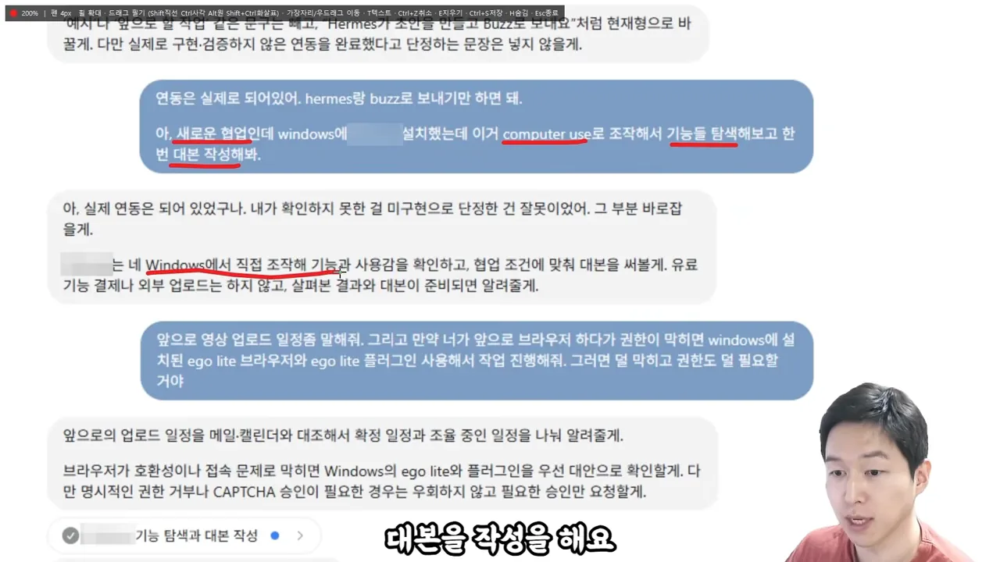
AI 대본을 그대로 읽지 않는 이유
문제는 AI 대본이 사람의 감각과 너무 다르다는 점이에요. 사람이 재밌어할 지점을 잘 못 잡고, 말투를 학습시켜도 확실히 티가 나요. 사람이 고치지 않으면 AI 슬롭 냄새가 난다고 해요. 그래서 대본은 결국 직접 고쳐요.
AI 대본 그대로 읽으면 저는 유튜버가 아니라 그냥 나레이션을 하는 사람이잖아요.
— 영상 03:49
그래도 초반에는 쓸모가 커요. 여러 방향의 대본을 빠르게 받아 볼 수 있고, 서비스를 직접 눌러 보고 기능을 정리해 주니까요. 특히 도입부는 AI가 첫 화두를 잘 못 던져서 늘 자기 방식으로 바꿔요. 다만 스토리 없이 설명만 하는 영상이라면 도입부까지 자동화할 수도 있다고 봐요.
대본이 나오면 모션 그래픽 초안까지
대본이 나오면 바로 모션 그래픽 초안까지 만들게 해요. 모션 그래픽이라고 해도 화려한 효과는 없고 슬라이드에 가까워요. 아래가 실제 결과물이에요. 왼쪽이 장면, 오른쪽이 촬영 대본이에요. 대본 안의 '[→ 1: 대본에서 클릭 지점 보기]' 같은 표시가 화살표를 누를 때를 알려 줘요.
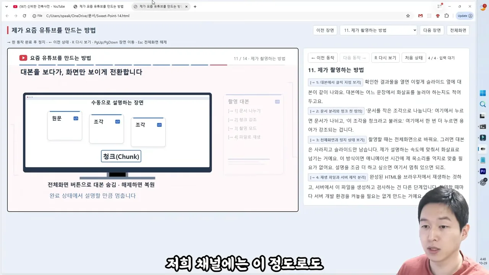
신 하나씩 찍으며 고치고 규칙 쌓기
촬영은 도입부를 먼저 찍고, AI가 만든 모션 그래픽을 순서대로 넘기면서 진행해요. 녹화는 OBS(Open Broadcaster Software)로 해요. 대본을 읽으며 화살표를 누르다가 마음에 안 드는 장면이 나오면 녹화를 멈추고, 협업툴에서 에이전트를 멘션해 수정을 지시해요.
아래 메시지 두 개가 수정의 두 종류를 보여 줘요. 위쪽 문단은 이번 장면만 고치는 지시예요. 이전 영상을 안 본 사람이 못 알아들으니 대본을 고치라는 내용이죠. 아래쪽 문단 '앞으로 대본 작성할 때 … 적절하게 대체해 줘. 기억해'는 다음 영상에도 적용할 규칙이에요.
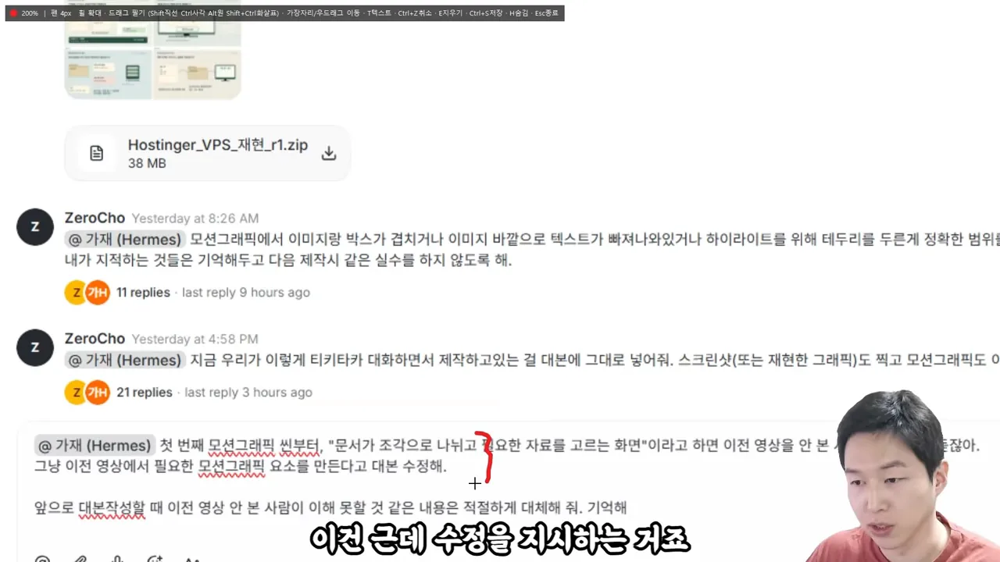
수정을 맡겨 둔 사이 제로초는 찍어 둔 인트로를 편집하고 다음 신을 찍어요. AI는 백그라운드에서 모션 그래픽을 고치고요. 편집은 간단하면 Vrew, 복잡하면 Adobe Premiere Pro를 써요. 아래 화면은 Premiere Pro 타임라인에 방금 찍은 인트로와 모션 그래픽 장면이 올라간 모습이에요.
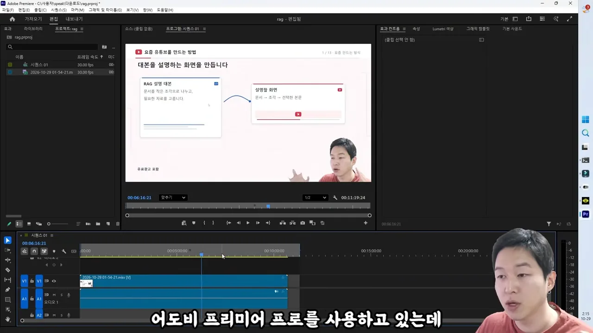
롱폼에서 직접 나와 설명하는 부분은 자동화하지 않아요. 제로초가 자기 목소리로 설명하는 게 채널의 정체성이라서요. 대신 고칠 때마다 규칙이 쌓이니, 영상을 만들수록 대본은 말투에 더 맞고 모션 그래픽은 더 적은 시도로 마음에 들게 나와요. 이 흐름을 그림으로 옮기면 이래요.
flowchart LR
A["AI 대본 초안"] --> B["모션 그래픽 생성 (VPS)"]
B --> C["한 신씩 촬영"]
C --> D{"마음에 드나?"}
D -- "아니요" --> E["협업툴로 수정 지시"]
E --> F{"또 반복될 실수?"}
F -- "예" --> G["제작 규칙에 추가"]
G --> B
F -- "아니요" --> B
D -- "예" --> H["다음 신"]
왜 VPS에서 만들까요
모션 그래픽은 VPS에서 만들어요. 촬영하는 컴퓨터에서 동시에 만들면 CPU(Central Processing Unit) 사용량이 치솟아 녹화가 버벅거리거든요. 그래서 별도의 컴퓨터를 빌려서 24시간 돌려요. 제로초는 데이터 수집이나 간단한 서비스 운영처럼 자는 동안에도 돌아가면 좋은 일에 VPS가 하나 있으면 좋다고 덧붙여요.
아래 장면은 대본과 모션 그래픽 요소가 'VPS 제작'으로 이어지고, 그 결과가 '제작 규칙 · 화면 소스'로 쌓여 '다음 영상에서도 다시 쓰기'가 되는 흐름을 보여 줘요.
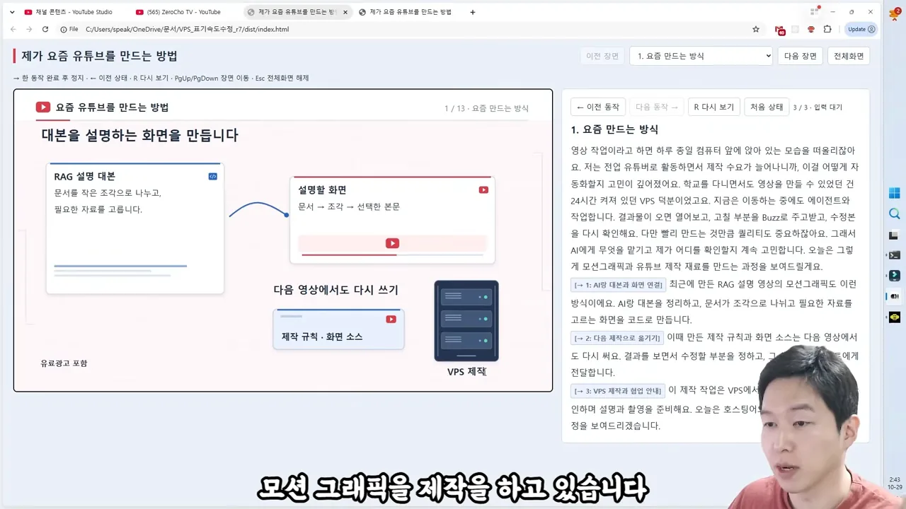
어떤 도구를 쓰는지보다 중요한 것
모션 그래픽을 만들 때 많이 쓰는 라이브러리로 Remotion, HyperFrames, Motion Canvas가 있어요. 제로초는 셋 다 써 봤는데 결과가 다 비슷했다고 해요. 어떤 기술을 쓰느냐보다 디자인을 따로 신경 쓰느냐가 결과를 갈라요. 제로초 채널은 디자인이 단순해도 상관없어서 디자인을 다듬는 시간이 오히려 낭비일 수 있다고 봐요. 아래가 그 단순한 모션 그래픽의 예예요. '영상 대본' 카드와 '설명에 맞는 화면' 카드가 선 하나로 이어진 게 전부예요.
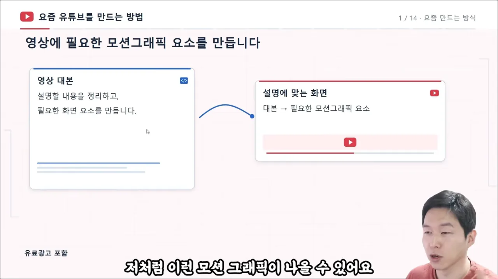
목표는 유튜브 영상을 찍어 내는 공장이에요. 그런데 공장이라고 해서 영상이 저절로 올라가는 건 아니에요. 사람이 개입해 고치지 않으면 아직은 무조건 AI 슬롭이 나온다고 봐요. 정보성 채널이라면 더 그래요. 문장이 말이 안 되고 인트로와 결론이 다른데도 조회수가 높은 채널을 보면 허탈하지만, 그건 제로초가 가려는 방향이 아니에요. 스스로 영상 제목도 AI가 지어 준 그대로라고 털어놓는데, 요즘은 그 정도는 크게 신경 쓰지 않는 것 같다고 해요.
넣는 것 세 가지: 대본·장면 지시·제작 규칙
모션 그래픽 에이전트에게 무엇을 넣고 무엇을 받는지가 이 영상의 뼈대예요. 슬라이드 제목이 '넣는 것 세 가지, 꺼내는 것 두 가지'예요. 위쪽 1·2·3 카드가 넣는 것이고, 아래쪽 'HTML + 촬영 대본'이 꺼내는 것이에요. 왼쪽 아래 '청크(Chunk)'와 가운데 1·2·3·4 숫자는 제작 규칙이 어떻게 화면에 드러나는지 보여 주는 예시예요.
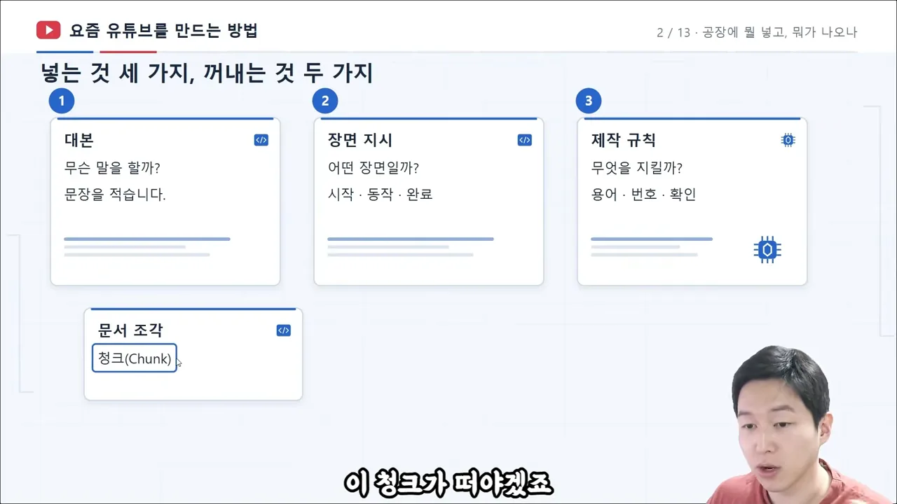
| 넣는 것 | 슬라이드의 질문 | 무엇을 적나요 |
|---|---|---|
| 대본 | 무슨 말을 할까? | AI와 함께 완성한 대본 |
| 장면 지시 | 어떤 장면일까? | 신마다 첫 화면, 핵심 동작, 최종 화면 |
| 제작 규칙 | 무엇을 지킬까? | 용어, 번호, 확인처럼 매번 지켜야 할 것 |
장면 지시: 첫 화면, 핵심 동작, 최종 화면
디자인은 빼더라도 모션 그래픽이 기능적으로 잘 돌아가려면 신마다 세 가지를 정의해야 해요. 모든 요소가 꺼져 있는 첫 화면, 모든 요소가 다 보이는 최종 화면, 그리고 첫 화면에서 최종 화면까지 어떻게 이어지는지를 적은 핵심 동작이에요. 아래 슬라이드가 그 예예요. 원본 문서 한 장(첫 화면)이 세 조각으로 나뉘고(핵심 동작), 필요한 청크가 강조돼요(최종 화면).
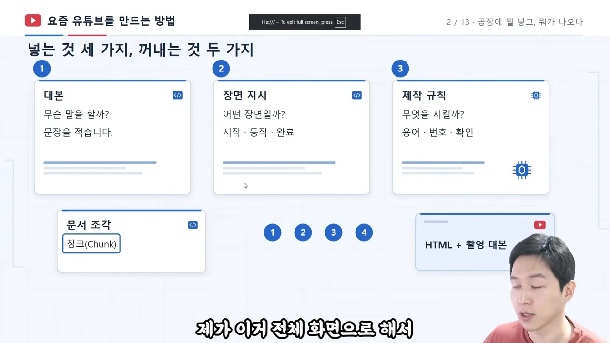
지시문도 AI에게 쓰라고 하면 돼요. 다만 반드시 이 세 요소로 쓰라고 해요. 13페이지짜리 모션 그래픽이라면 13페이지 모두에 첫 화면, 핵심 동작, 최종 화면이 들어가요.
제작 규칙: 용어와 번호
규칙은 만들수록 정교해져요. 예를 들어 대본에 '청크'라는 말이 나오면 그 말을 할 때 화면에 청크가 떠야 하고, 첫째·둘째·셋째를 나열하면 1·2·3이 떠야 해요. 이런 걸 규칙으로 적어 두는 거예요. 스스로 개선하는 과정이 없으면 제자리걸음이라고 강조해요.
AI와 작업할 때는 AI의 계속 규칙들을 추가하고 해서 다음번에 같은 실수를 반복하지 않게
— 영상 12:08
VPS에 맡기고 휴대폰으로 확인하기
대본, 장면 지시, 규칙을 묶어 VPS의 에이전트에게 보내면, 에이전트가 그 안에서 모션 그래픽을 만들어요. 아래 슬라이드처럼 '내 PC'에서 '제작 파일(대본 · 장면 지시 · 스킬)'이 VPS로 넘어가는 구조예요.
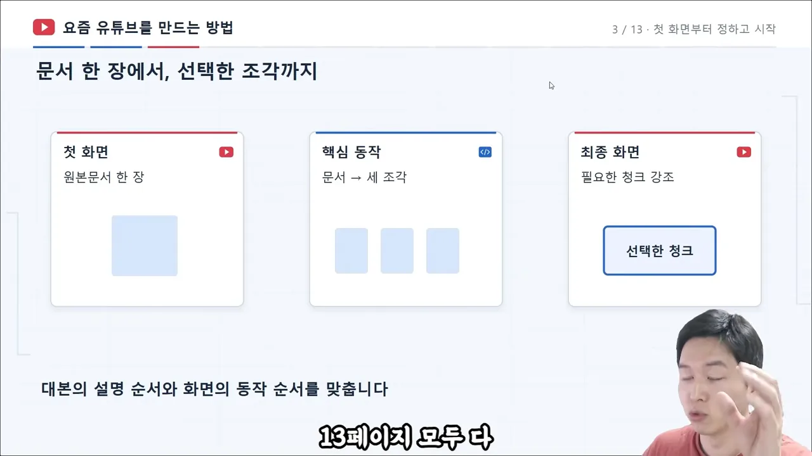
간단한 그래픽도 생각보다 오래 걸려요. 컴퓨터 앞에서 기다리면 너무 느리니, 외출하기 직전이나 자기 직전에 부탁해 두고 돌아오면 완성돼 있게 해요. 결과물인 HTML과 대본은 VPS에 저장되는데, 서버에 직접 들어가 보기 어려우니 협업툴에 올리라고 시켜 두고 휴대폰으로 확인해요.
도구는 바꿔도 돼요. 아래 슬라이드 왼쪽 '도구는 선택' 카드에 'Buzz · Hermes는 이번 제작의 선택', 'dots · Slack 등은 연동 설정 필요'라고 적혀 있어요. Buzz와 Hermes는 오픈소스라서 일부러 골랐을 뿐이에요. 오른쪽 '작업 환경은 계속 켜두기' 카드처럼, PC를 24시간 켜 둘 수 있다면 VPS도 꼭 필요하지 않아요.
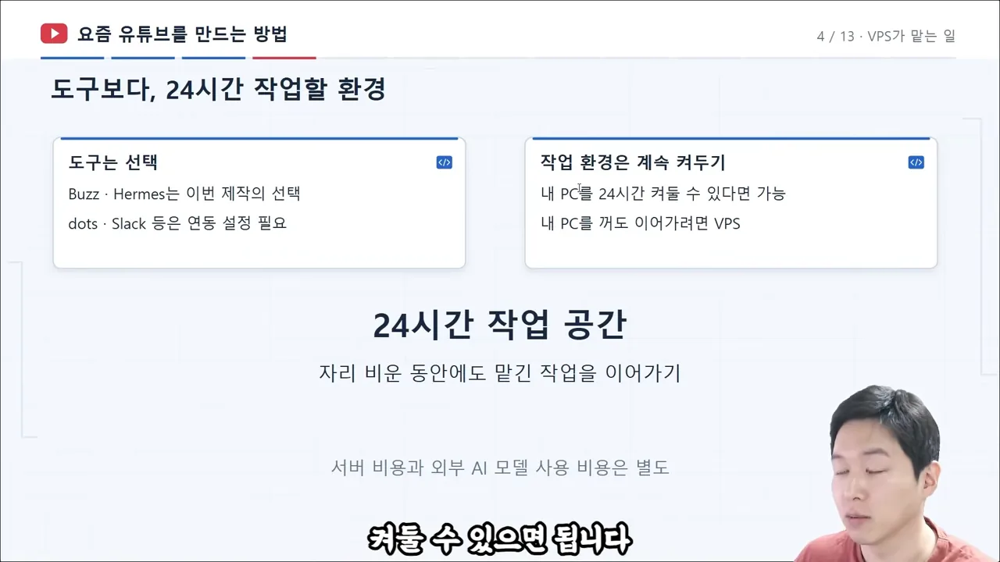
반복되는 지적은 규칙으로
대부분은 그냥 고쳐 달라는 말로 끝나요. 하지만 같은 실수가 반복되면 '꼭 기억하고 다음 제작 때 실수하지 않게 규칙에 추가해'라고 해요. 요소끼리 겹치는 문제가 그랬어요. 아래 r1과 r2 비교에서 왼쪽 r1은 'VPS 제작' 서버 그림이 '다음 영상에서도 다시 쓰기' 폴더에 겹쳐 있고, 오른쪽 r2는 서버 그림을 오른쪽으로 떼어 놨어요.
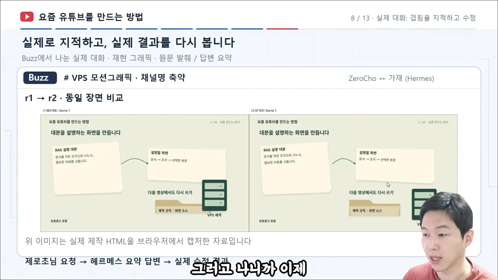
채널 정체성과 Sweet Point
마음만 먹으면 목소리와 얼굴까지 자동화할 수 있다고 해요. 목소리는 직접 만들어 주변 사람에게 들려줬더니 독특한 억양 말고는 거의 구분하지 못했고, 비용도 싸요. 하지만 실제 자기 얼굴을 생성하려면 비용과 시간이 너무 들어서 소형 채널에는 수지가 맞지 않아요. 아래 슬라이드가 이 비교를 세 카드로 정리했어요.
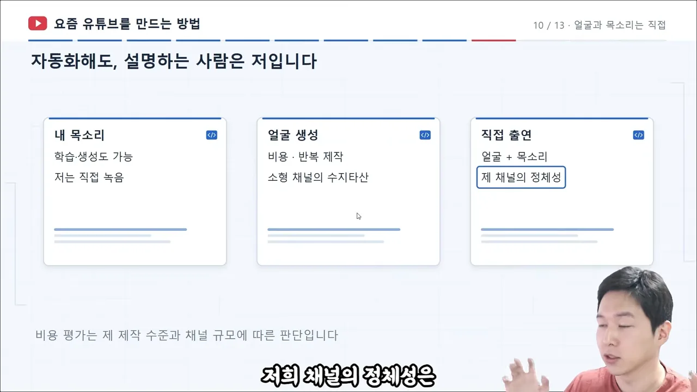
처음부터 거북이 캐릭터 같은 버추얼 유튜버로 시작했다면 사람 얼굴보다 훨씬 싸고 빠르게 만들 수 있었을 거라 조금 후회도 했대요. 그래도 직접 나와 설명하는 게 채널의 정체성이라 그 비용은 감수해요. AI 시대에 사람으로서의 자존심이기도 하다고요.
그래서 모션 그래픽은 어디까지나 보조예요. 아래 슬라이드 왼쪽 '제 채널의 제작 기준'에 '설명 내용이 먼저', '설명을 방해하지 않는 모션', '글자 겹침과 순서 오류는 검수'가 적혀 있고, 오른쪽 '다음 제작에서 더 낫게'에는 '한 번에 끝내기보다 다음 결과물에 피드백 반영'이 있어요.
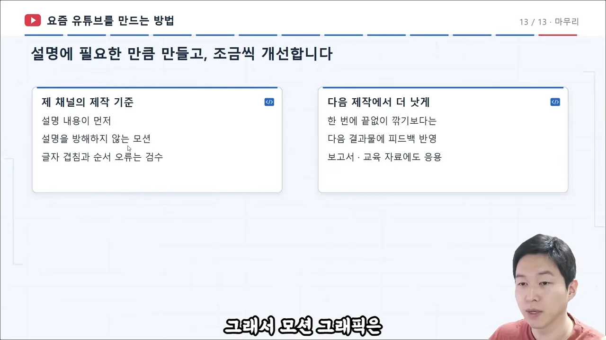
사람이 빠지면 안 되는 이유가 하나 더 있어요. AI 모델은 자꾸 바뀌고, 모델이 바뀌면 AI의 글 성격도 바뀌어요. 잘 쓰던 글이 갑자기 망가지는 일이 생기죠. 그래서 아직은 사람의 개입이 꼭 필요하다고 봐요.
Sweet Point: 범용과 장인 사이
한 번 만든 템플릿을 모든 영상에 쓰기도 어려워요. 영상마다 콘셉트와 주제가 다르니까요. 아래 곡선의 왼쪽 끝은 'AI Slop · 범용적'이에요. 너무 범용적으로 쓸 수 있게 만들면 AI 슬롭으로 느껴질 확률이 올라가요. 오른쪽 끝은 '재사용 불가 · 개별 영상에 맞춤'이에요. 모션 그래픽을 너무 깎으면 그 영상에만 맞아 다른 주제에는 어울리지 않아요. 가운데 꼭대기가 Sweet Point예요.
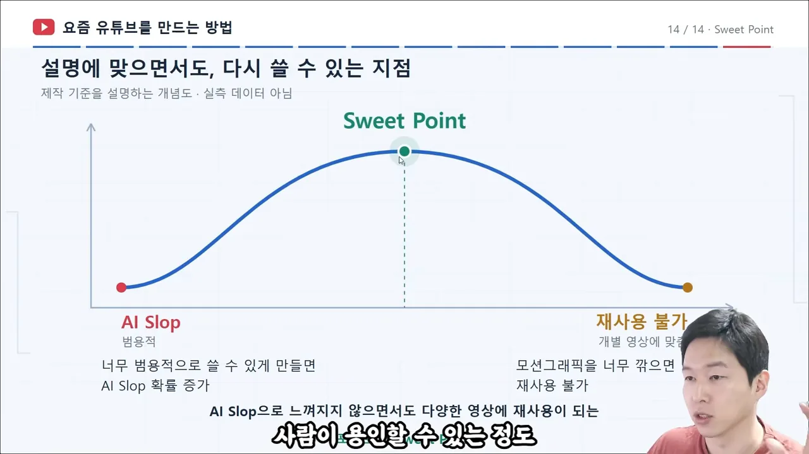
이 지점은 채널마다 달라요. 제로초가 예로 든 경제 채널은 말투가 사람 말투가 아니라 AI로 만든 게 바로 느껴지는데도 아무도 불평하지 않아요. 사람이 불편함을 느끼기 직전에서 멈췄고, 그 템플릿은 계속 재사용할 수 있죠. 아래가 그 채널의 영상이에요. 검은 배경에 날짜별 사건을 점으로 이은 타임라인 그래픽이 보여요.
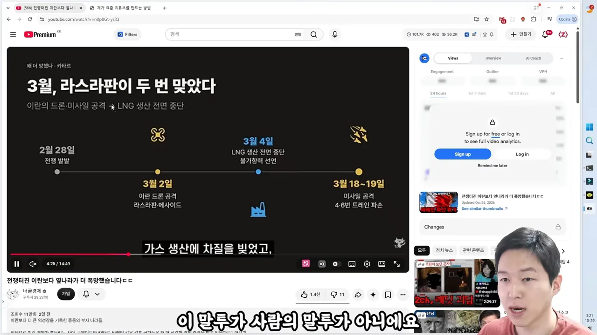
건축 상식을 다루는 다른 채널은 AI가 만들어 틀린 내용이 많지만, 시청자가 지식보다 재미로 보기 때문에 별로 문제 삼지 않는다고 해요. 결국 AI 슬롭이 어디까지 허용되는지는 채널 특성에 따라 크게 달라요. 그래서 남의 모션 그래픽 스킬을 가져다 써도 자기 채널에 맞게 고치는 과정이 꼭 필요하다는 게 이 구간의 결론이에요.
편집·자막·썸네일, 그리고 다음 대본으로
편집은 모자이크처럼 복잡한 작업이 필요하면 Premiere Pro, 아니면 Vrew로 해요. Vrew가 한국어 자막을 가장 정확하게 달아 주고, 전문 용어도 알아서 교정해 줘요. Premiere Pro에서 내보낸 파일을 Vrew에 추가하면 아래 '영상 불러오기' 창이 떠요. 가운데에 'Basic'과 'Plus' 두 가지 자막 인식 모드가 나란히 있어요.
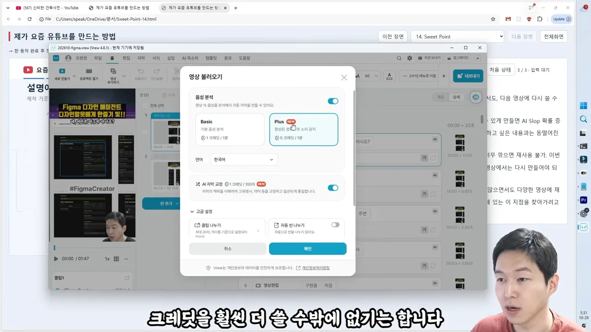
썸네일은 사진을 찍어 GPT(Generative Pre-trained Transformer) 이미지로 만들어 달라고 해요. 아래가 완성된 썸네일이에요. 'AI 쇼츠 400개'와 '유튜브 제작과정' 같은 큰 글자가 얹혀 있어요. GPT가 만든 티가 나도, 읽었을 때 클릭해 볼 만하면 크게 신경 쓰지 않아요.
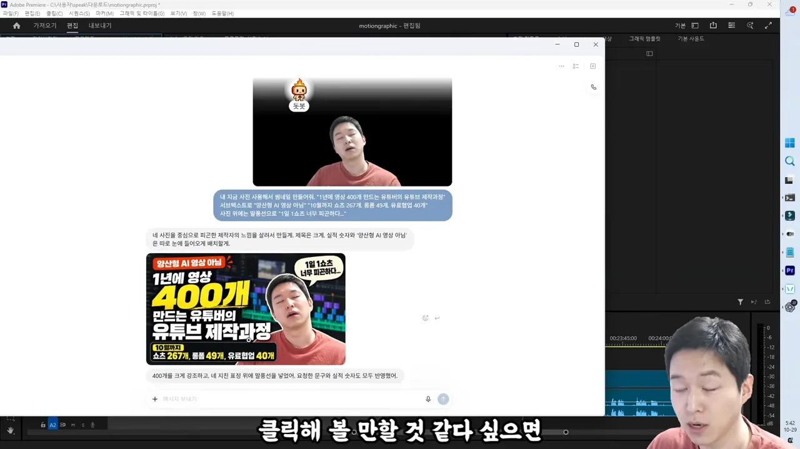
유료 협업은 브리프와 자막으로 검수
유료 협업에는 광고주가 원하는 조건이 있고, 이걸 브리프 문서로 받아요. 브리프와 실제 영상 자막을 함께 넣고 체크해 달라고 하면 AI가 항목별로 표를 만들어 줘요. 아래 표에서 왼쪽이 항목, 가운데가 확인 결과, 오른쪽이 판정이에요. '6분 이상 영상'은 충족, '필수 키워드'는 수정 필요, '영어 자동 더빙'은 미확인으로 나와 있어요.
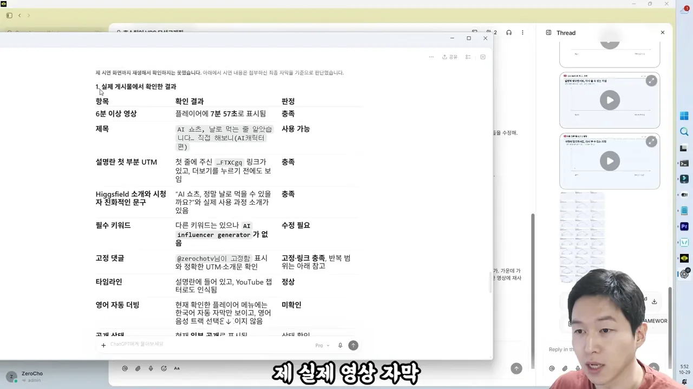
마지막 단계: 실제 자막을 다음 대본에 먹이기
제로초가 꼭 하는 마지막 작업이 있어요. 영상을 올리면 유튜브에 타임스탬프가 붙은 자막이 생겨요. 이건 실제로 말한 그대로라 학습 가치가 높아요. 말투와 멘트뿐 아니라 타임스탬프 덕분에 1초에 얼마나 말하는지 같은 속도까지 알 수 있어요.
아래 메시지에는 자막 파일 'rag-part1.mp4.txt'가 첨부돼 있고, 빨간 밑줄로 '다음 대본 작성할 때는 방금 대본의 내 말투, 인트로/엔딩 멘트 이런 것을 기억해서 작성해 줘'라고 적혀 있어요.
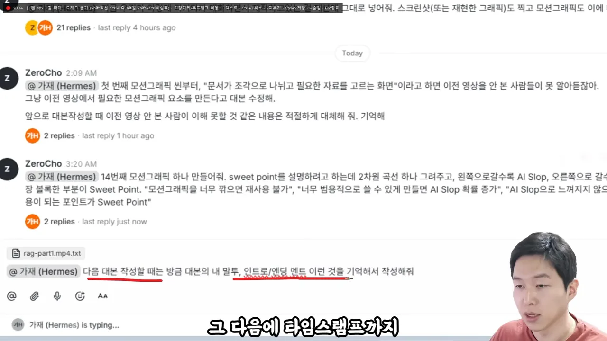
같은 실수를 반복하지 않게 하고, 다음엔 더 자기와 비슷하게 만드는 것. 제로초는 유튜브뿐 아니라 AI를 쓰는 모든 일에서 이렇게 규칙을 스스로 업데이트하게 한다고 말하며 영상을 마쳐요.